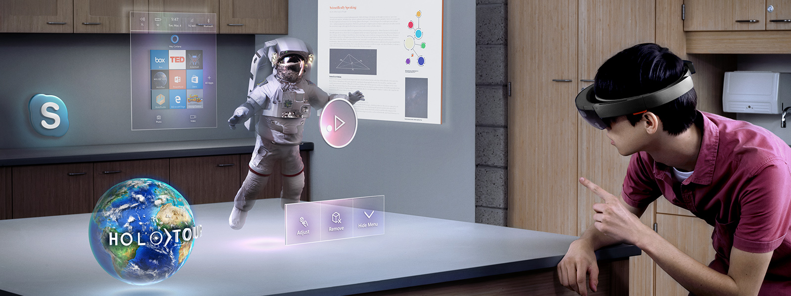
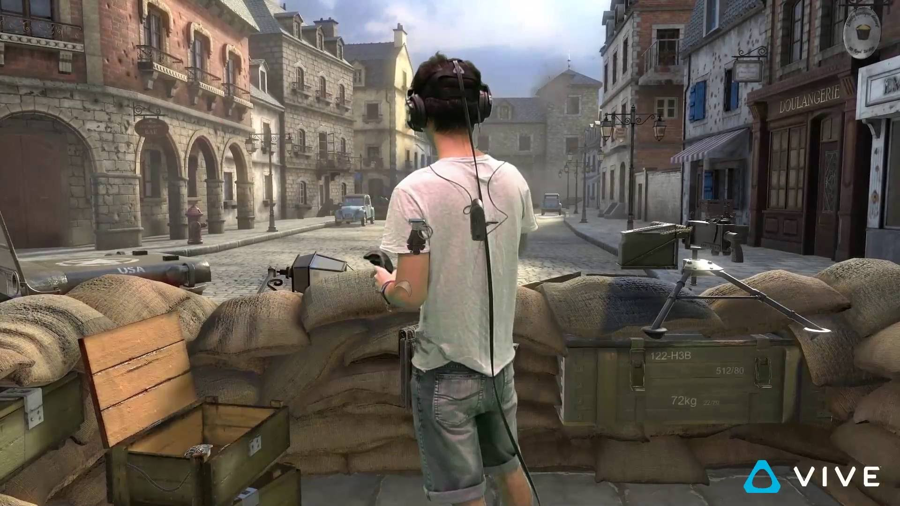

Virtual RealiTEACH:
Immmersive Virtual Reality for Novice Programmers
Anthony Benavente & Daniel PowellWhy are we doing this?
- Technology jobs are growing [3]
- World-wide introductory courses lose students[5]
Visualization Methods
- Virtual Reality
- Augmented Reality
- On screen interaction
 
Code Visualization Tools


Our Solution
- Dynamically Teach Students [2]
- Increase Learning Efficiency [1]
- Technologies Used


Challenges
- Nausea
- Undocumented libraries
- Self-guidance
- Code organization
Self-guidance and Tutorial
- Steam's VR tutorial
- Working on several things:
- How to use the controller
- How to look for clues/progress
- Player motivation
Code organization
- Work division
- Code visualization and debugging
Visual Syntax
- Objects
- Interfaces
- Clones
Objects
- Objects are cubes by default
- Users can change the skin to any mesh

Interfaces
- A pair of objects, one the static type, and the other the dynamic type.
- Dynamic types provide functionality to the static type.
Clones
- Shallow clones
- Deep clones
Detailed Game Overview
- Manual Sorting Algorithm
- Interfaces
- Cloning
- System Management
Sorting Algorithms
- Extensible Sorting Manager
- Step-by-step Sorting Algorithms
Sorting Demo
Interfaces
- Static and Dynamic Types
- Key Types
Cloning in Unity
- Observer pattern!
- Cloning guns
- What happens when you deep/shallow clone a shallow clone?
Shallow Clones
Deep Clones
System Management
- Minigame Management
- Room Progression
- Life Managment
Life Management
- Extensible

Conclusion
- Computer Science poster demonstration results
Future Work
- Create a more indepth user guidance system
- Introduce more concepts
- Build more learning environments
- Make use of all tools we have created
References
- Daly, Tebring. Influence of alice 3: reducing the hurdles to success in a cs1 programming course. Diss. University of North Texas, 2013.
- Naps, Thomas L., et al. "Exploring the role of visualization and engagement in computer science education." ACM Sigcse Bulletin. Vol. 35. No. 2. ACM, 2002.
- Schwan, Stephan, and Roland Riempp. "The cognitive benefits of interactive videos: Learning to tie nautical knots." Learning and Instruction 14.3 (2004): 293-305.
- Patrick Thibodeau. IT Jobs will grow 22% through 2020, says U.S., 2012.
- Watson, Christopher, and Frederick WB Li. "Failure rates in introductory programming revisited." Proceedings of the 2014 conference on Innovation & technology in computer science education. ACM, 2014.